library(magrittr)
library(mice)
library(ggplot2)
library(DAAG)
library(MASS)
library(dplyr)Exercise B
In this practical I detail multiple skills and show you a workflow for (predictive) analytics.
All the best,
Gerko
Exercises
The following packages are required for this practical:
Exercise 1
The data sets elastic1 and elastic2 from the package DAAG were obtained using the same apparatus, including the same rubber band, as the data frame elasticband.
- Using a different symbol and/or a different color, plot the data from the two data frames
elastic1andelastic2on the same graph. Do the two sets of results appear consistent?
elastic <- rbind(elastic1, elastic2)
elastic$source <- c(rep("Elastic1", nrow(elastic1)),
rep("Elastic2", nrow(elastic2)))
elastic %>%
ggplot(aes(stretch, distance, colour = source)) +
geom_point() +
geom_smooth(method = "lm")`geom_smooth()` using formula = 'y ~ x'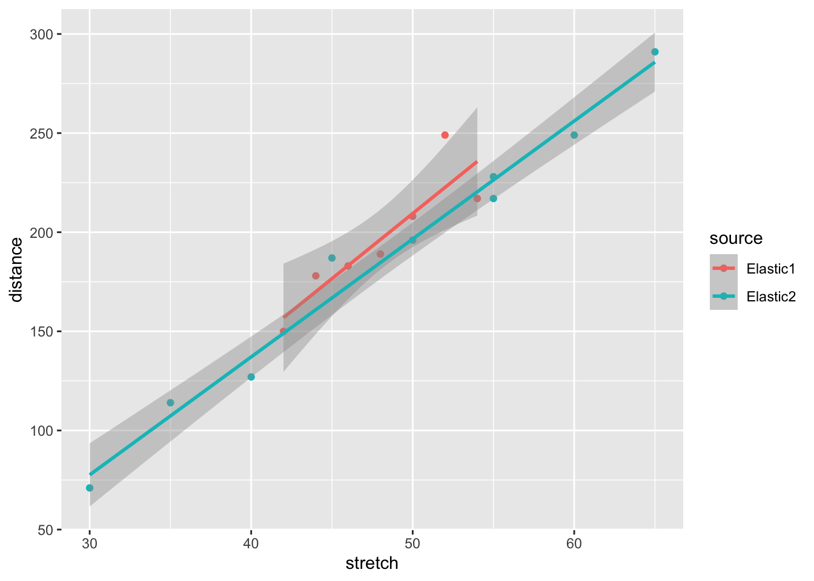
The results seem very consistent: Data set elastic2 has more observations over a larger range, but both sets result in roughly the same regression line. Data set elastic1 seems to have an odd-one-out value.
Exercise 2
- For each of the data sets
elastic1andelastic2, determine the regression of distance on stretch (i.e. model the outcomedistanceon the predictorstretch). In each case determine:
- fitted values and standard errors of fitted values and
- the \(R^2\) statistic.
Compare the two sets of results. What is the key difference between the two sets of data?
First we run the two models:
fit1 <-
elastic1 %$%
lm(distance ~ stretch)
fit2 <-
elastic2 %$%
lm(distance ~ stretch)and then we compare the fitted values
fit1 %>% predict(se.fit = TRUE)$fit
1 2 3 4 5 6 7
183.1429 235.7143 196.2857 209.4286 170.0000 156.8571 222.5714
$se.fit
[1] 6.586938 10.621119 5.891537 6.586938 8.331891 10.621119 8.331891
$df
[1] 5
$residual.scale
[1] 15.58754fit2 %>% predict(se.fit = TRUE)$fit
1 2 3 4 5 6 7 8
77.58333 196.58333 137.08333 166.83333 256.08333 226.33333 107.33333 226.33333
9
285.83333
$se.fit
[1] 6.740293 3.520003 4.358744 3.635444 5.060323 4.064550 5.453165 4.064550
[9] 6.296773
$df
[1] 7
$residual.scale
[1] 10.44202We see that fit1 (based on elastic1) has a larger residual standard deviation (i.e. $residual.scale).
To get the \(R^2\) we can run a summary on the fitted models:
fit1 %>% summary()
Call:
lm(formula = distance ~ stretch)
Residuals:
1 2 3 4 5 6 7
-0.1429 -18.7143 -7.2857 -1.4286 8.0000 -6.8571 26.4286
Coefficients:
Estimate Std. Error t value Pr(>|t|)
(Intercept) -119.143 70.943 -1.679 0.15391
stretch 6.571 1.473 4.462 0.00663 **
---
Signif. codes: 0 '***' 0.001 '**' 0.01 '*' 0.05 '.' 0.1 ' ' 1
Residual standard error: 15.59 on 5 degrees of freedom
Multiple R-squared: 0.7992, Adjusted R-squared: 0.7591
F-statistic: 19.91 on 1 and 5 DF, p-value: 0.006631fit2 %>% summary()
Call:
lm(formula = distance ~ stretch)
Residuals:
Min 1Q Median 3Q Max
-10.0833 -7.0833 -0.5833 5.1667 20.1667
Coefficients:
Estimate Std. Error t value Pr(>|t|)
(Intercept) -100.9167 15.6102 -6.465 0.000345 ***
stretch 5.9500 0.3148 18.899 2.89e-07 ***
---
Signif. codes: 0 '***' 0.001 '**' 0.01 '*' 0.05 '.' 0.1 ' ' 1
Residual standard error: 10.44 on 7 degrees of freedom
Multiple R-squared: 0.9808, Adjusted R-squared: 0.978
F-statistic: 357.2 on 1 and 7 DF, p-value: 2.888e-07Or we can grab the \(R^2\) directly from the object without a pipe
summary(fit1)$r.squared[1] 0.7992446summary(fit2)$r.squared[1] 0.9807775The model based on elastic2 has smaller standard errors and a much larger \(R^2\). This is due to the larger range of values in elastic2, and the absence of an outlier.
Exercise 3
- Study the residual vs leverage plots for both models. Hint use
plot()on the fitted object
fit1 %>% plot(which = 5) #the fifth plot is the residuals vs leverage plot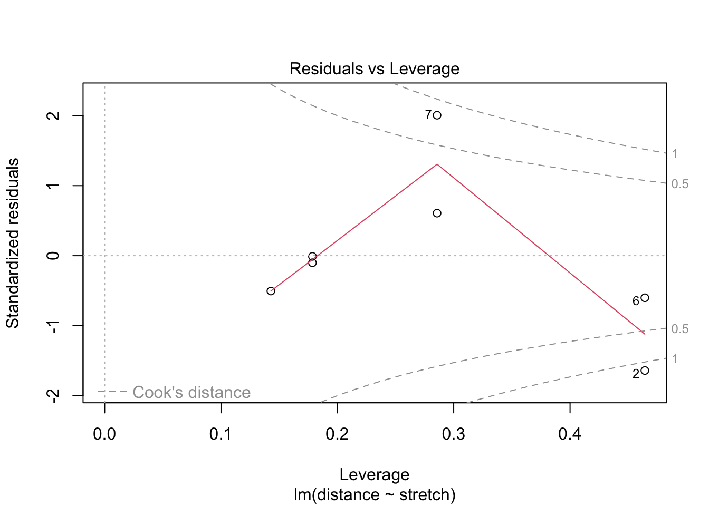
fit2 %>% plot(which = 5)
For elastic1, case 2 has the largest influence on the estimation. However, it is not the case with the largest residual:
fit1$residuals 1 2 3 4 5 6
-0.1428571 -18.7142857 -7.2857143 -1.4285714 8.0000000 -6.8571429
7
26.4285714 As we can see, case 7 has the largest residual.
Because there is a single value that influences the estimation and is somewhat different than the other values, a robust form of regression may be advisable to obtain more stable estimates. When robust methods are used, we refrain from omitting a suspected outlier from our analysis. In general, with robust analysis, influential cases that are not conform the other cases receive less weight in the estimation procedure then under non-robust analysis.
Exercise 4
- Use the robust regression function
rlm()from theMASSpackage to fit lines to the data inelastic1andelastic2. Compare the results with those from use oflm():
- residuals
- regression coefficients,
- standard errors of coefficients,
- plots of residuals against fitted values.
First, we run the same models again with rlm()
fit1.rlm <-
elastic1 %$%
rlm(distance ~ stretch)
fit2.rlm <-
elastic2 %$%
rlm(distance ~ stretch)and then we look at the coefficients and the residuals
data.frame(lm = coef(fit1),
rlm = coef(fit1.rlm)) lm rlm
(Intercept) -119.142857 -95.747207
stretch 6.571429 6.039709data.frame(lm = coef(fit2),
rlm = coef(fit2.rlm)) lm rlm
(Intercept) -100.9167 -103.055008
stretch 5.9500 5.975157We see that the coefficients for elastic1 are different for lm() and rlm(). The coefficients for elastic2 are very similar.
To study the standard errors of the coefficients:
data.frame(lm = summary(fit1)$coefficients[, "Std. Error"],
rlm = summary(fit1.rlm)$coefficients[, "Std. Error"]) lm rlm
(Intercept) 70.943496 60.690050
stretch 1.472884 1.260009data.frame(lm = summary(fit2)$coefficients[, "Std. Error"],
rlm = summary(fit2.rlm)$coefficients[, "Std. Error"]) lm rlm
(Intercept) 15.6101986 14.4955054
stretch 0.3148387 0.2923567The standard errors for the estimates for elastic1 have become much smaller with rlm() compared to standard lm() estimation. The standard errors for elastic2 are very similar.
To study the residuals:
data.frame(lm = residuals(fit1),
rlm = residuals(fit1.rlm)) lm rlm
1 -0.1428571 0.9205815
2 -18.7142857 -13.3970925
3 -7.2857143 -5.1588370
4 -1.4285714 1.7617445
5 8.0000000 8.0000000
6 -6.8571429 -7.9205815
7 26.4285714 30.6823260data.frame(lm = residuals(fit2),
rlm = residuals(fit2.rlm)) lm rlm
1 -6.5833333 -5.1997008
2 -0.5833333 0.2971601
3 -10.0833333 -8.9512703
4 20.1666667 21.1729449
5 -7.0833333 -6.4544094
6 -9.3333333 -8.5786247
7 6.6666667 7.9245144
8 1.6666667 2.4213753
9 5.1666667 5.6698058The residual trend for both models is very similar. Remember that different values will still be different under robust analyses; they are only given less influence.
To plot the residuals against the fitted values:
plot(fit1, which = 1, add.smooth = "FALSE", col = "blue", main = "elastic1")
points(residuals(fit1.rlm) ~ fitted(fit1.rlm), col = "orange")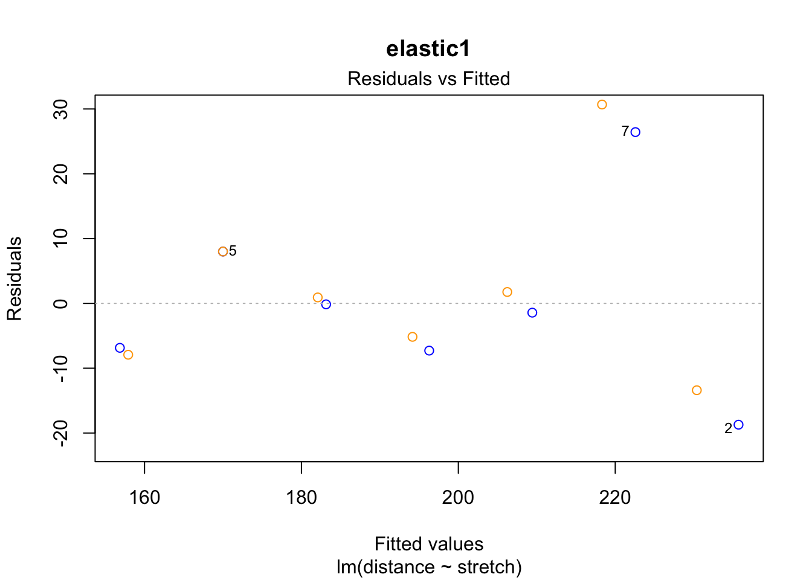
plot(fit2, which = 1, add.smooth = "FALSE", col = "blue", main = "elastic2")
points(residuals(fit2.rlm) ~ fitted(fit2.rlm), col = "orange")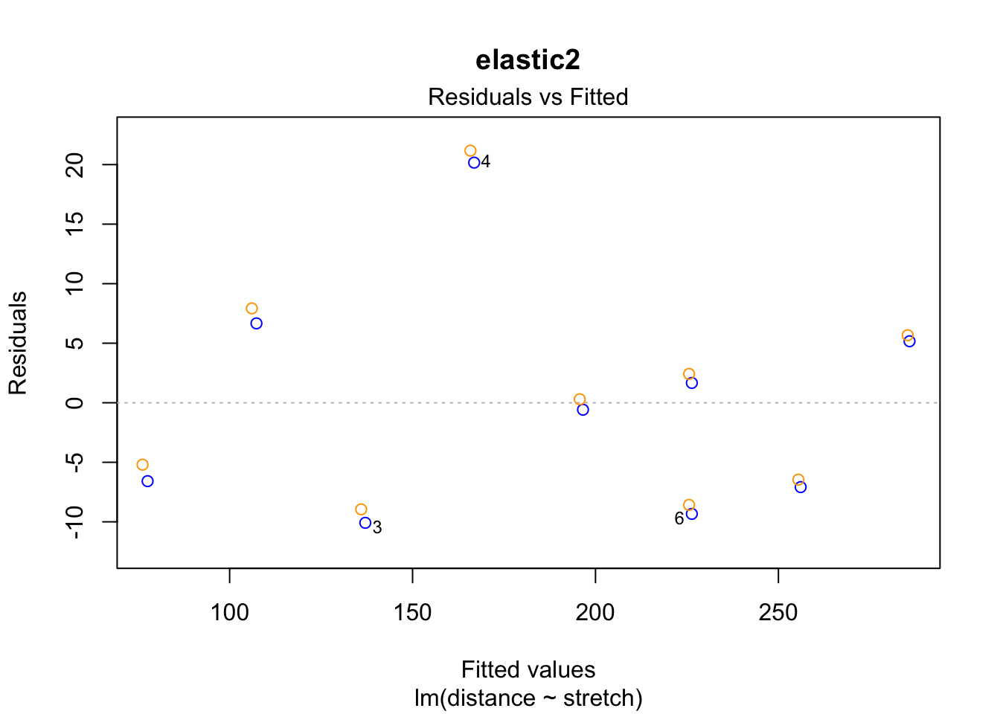
The case 2 residual in elastic1 is smaller in the robust regression. This is because the case had less weight in the rlm() estimation of the coefficients than in the ordinary lm() regression.
Exercise 5
- Use the
elastic2variablestretchto obtain predictions on the model fitted onelastic1.
pred <- predict.lm(fit1, newdata = data.frame(stretch = elastic2$stretch))Exercise 6
- Now make a scatterplot to investigate similarity between plot the predicted values against the observed values for
elastic2
new.dat <- data.frame(stretch = elastic2$stretch,
distance = c(elastic2$distance, pred))
new.dat$source <- c(rep("original", nrow(elastic2)),
rep("predicted", nrow(elastic2)))
new.dat %>%
ggplot(aes(stretch, distance, colour = source)) +
geom_point() +
geom_smooth(method = "lm")`geom_smooth()` using formula = 'y ~ x'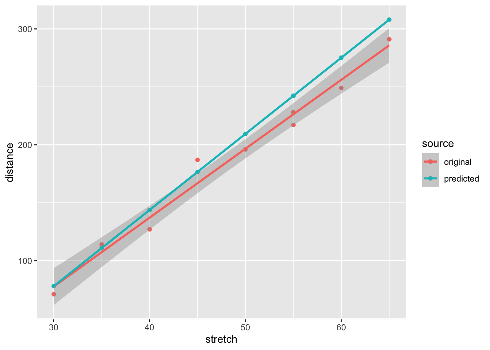
The predicted values are very similar to the observed values:
data.frame(distance = elastic2$distance, predicted = pred) %>%
ggplot(aes(distance, predicted)) +
geom_point()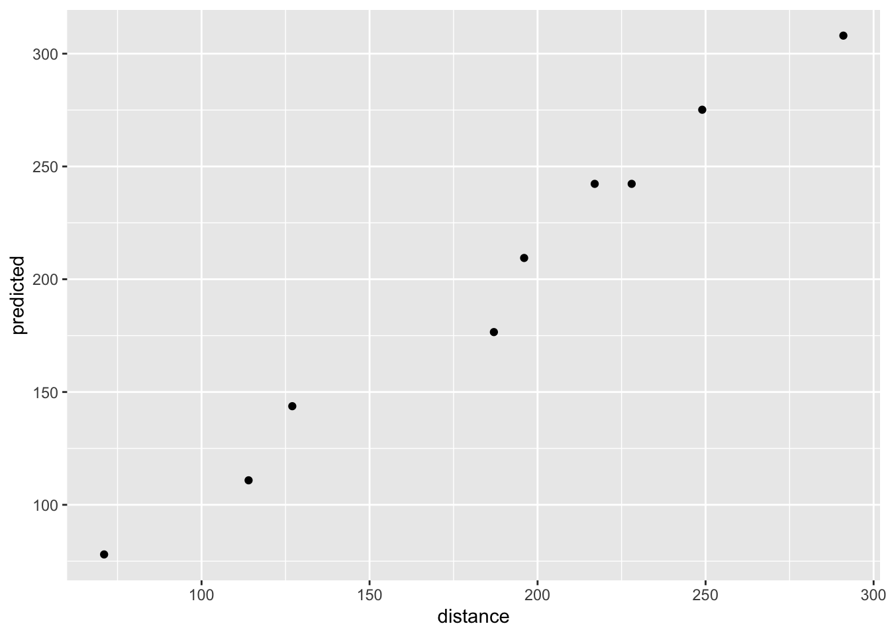
They do not strictly follow the straight line because there is some modeling error: we use elastic1’s model to predict elastic2’s distance [error source 1] and we compare those predictions to elastic2’s observed distance [error source 2]. However, if you consider the modeling, these predictions are very accurate and have high correlations with the observed values:
data.frame(distance = elastic2$distance, predicted = pred) %>%
cor() distance predicted
distance 1.0000000 0.9903421
predicted 0.9903421 1.0000000The mammalsleep dataset is part of mice. It contains the Allison and Cicchetti (1976) data for mammalian species. To learn more about this data, type
?mammalsleepExercise 7
- Fit and inspect a model where
brwis modeled frombw
mammalsleep %$%
lm(brw ~ bw) %>%
anova()Analysis of Variance Table
Response: brw
Df Sum Sq Mean Sq F value Pr(>F)
bw 1 46068314 46068314 411.19 < 2.2e-16 ***
Residuals 60 6722239 112037
---
Signif. codes: 0 '***' 0.001 '**' 0.01 '*' 0.05 '.' 0.1 ' ' 1It seems that we can model brain weight brw with body weight bw. If we inspect the linear model, we see that the \(R^2\) is quite high:
mammalsleep %$%
lm(brw ~ bw) %>%
summary()
Call:
lm(formula = brw ~ bw)
Residuals:
Min 1Q Median 3Q Max
-810.07 -88.52 -79.64 -13.02 2050.33
Coefficients:
Estimate Std. Error t value Pr(>|t|)
(Intercept) 91.00440 43.55258 2.09 0.0409 *
bw 0.96650 0.04766 20.28 <2e-16 ***
---
Signif. codes: 0 '***' 0.001 '**' 0.01 '*' 0.05 '.' 0.1 ' ' 1
Residual standard error: 334.7 on 60 degrees of freedom
Multiple R-squared: 0.8727, Adjusted R-squared: 0.8705
F-statistic: 411.2 on 1 and 60 DF, p-value: < 2.2e-16Exercise 8
- Now fit and inspect a model where
brwis predicted from bothbwandspecies
mammalsleep %$%
lm(brw ~ bw + species) %>%
anova()Warning in anova.lm(.): ANOVA F-tests on an essentially perfect fit are
unreliableAnalysis of Variance Table
Response: brw
Df Sum Sq Mean Sq F value Pr(>F)
bw 1 46068314 46068314 NaN NaN
species 60 6722239 112037 NaN NaN
Residuals 0 0 NaN There seems to be a perfect fit and we don’t get any p-values. If we inspect the linear model summary(), we find that every animal only is observed once. Adding species as a predictor yields the most overfitted model we may obtain and our residuals drop effectively to zero.
mammalsleep %$%
lm(brw ~ bw + species) %>%
summary()
Call:
lm(formula = brw ~ bw + species)
Residuals:
ALL 62 residuals are 0: no residual degrees of freedom!
Coefficients: (1 not defined because of singularities)
Estimate Std. Error t value Pr(>|t|)
(Intercept) 13.5316 NaN NaN NaN
bw 0.8564 NaN NaN NaN
speciesAfrican giant pouched rat -7.7880 NaN NaN NaN
speciesArctic Fox 28.0695 NaN NaN NaN
speciesArctic ground squirrel -8.6195 NaN NaN NaN
speciesAsian elephant 2408.2242 NaN NaN NaN
speciesBaboon 156.9334 NaN NaN NaN
speciesBig brown bat -13.2513 NaN NaN NaN
speciesBrazilian tapir 18.4448 NaN NaN NaN
speciesCat 9.2423 NaN NaN NaN
speciesChimpanzee 381.7987 NaN NaN NaN
speciesChinchilla -7.4956 NaN NaN NaN
speciesCow 11.2436 NaN NaN NaN
speciesDesert hedgehog -11.6026 NaN NaN NaN
speciesDonkey 245.2365 NaN NaN NaN
speciesEastern American mole -12.3958 NaN NaN NaN
speciesEchidna 8.8992 NaN NaN NaN
speciesEuropean hedgehog -10.7039 NaN NaN NaN
speciesGalago -8.7029 NaN NaN NaN
speciesGenet 2.7609 NaN NaN NaN
speciesGiant armadillo 16.0846 NaN NaN NaN
speciesGiraffe 213.4342 NaN NaN NaN
speciesGoat 77.7805 NaN NaN NaN
speciesGolden hamster -12.6344 NaN NaN NaN
speciesGorilla 215.1941 NaN NaN NaN
speciesGray seal 238.6746 NaN NaN NaN
speciesGray wolf 74.8555 NaN NaN NaN
speciesGround squirrel -9.6181 NaN NaN NaN
speciesGuinea pig -8.9222 NaN NaN NaN
speciesHorse 195.2854 NaN NaN NaN
speciesJaguar 57.8287 NaN NaN NaN
speciesKangaroo 12.4945 NaN NaN NaN
speciesLesser short-tailed shrew -13.3959 NaN NaN NaN
speciesLittle brown bat -13.2902 NaN NaN NaN
speciesMan 1253.3718 NaN NaN NaN
speciesMole rat -10.6361 NaN NaN NaN
speciesMountain beaver -6.5877 NaN NaN NaN
speciesMouse -13.1513 NaN NaN NaN
speciesMusk shrew -13.2427 NaN NaN NaN
speciesN. American opossum -8.6875 NaN NaN NaN
speciesNine-banded armadillo -5.7290 NaN NaN NaN
speciesOkapi 262.3691 NaN NaN NaN
speciesOwl monkey 1.5573 NaN NaN NaN
speciesPatas monkey 92.9044 NaN NaN NaN
speciesPhanlanger -3.5190 NaN NaN NaN
speciesPig 2.0401 NaN NaN NaN
speciesRabbit -3.5726 NaN NaN NaN
speciesRaccoon 21.9962 NaN NaN NaN
speciesRat -11.8714 NaN NaN NaN
speciesRed fox 33.2416 NaN NaN NaN
speciesRhesus monkey 159.6449 NaN NaN NaN
speciesRock hyrax (Hetero. b) -1.8739 NaN NaN NaN
speciesRock hyrax (Procavia hab) 4.3854 NaN NaN NaN
speciesRoe deer 71.9680 NaN NaN NaN
speciesSheep 113.9384 NaN NaN NaN
speciesSlow loris -2.2305 NaN NaN NaN
speciesStar nosed mole -12.5830 NaN NaN NaN
speciesTenrec -11.7023 NaN NaN NaN
speciesTree hyrax -2.9444 NaN NaN NaN
speciesTree shrew -11.1207 NaN NaN NaN
speciesVervet 40.8801 NaN NaN NaN
speciesWater opossum -12.6290 NaN NaN NaN
speciesYellow-bellied marmot NA NA NA NA
Residual standard error: NaN on 0 degrees of freedom
Multiple R-squared: 1, Adjusted R-squared: NaN
F-statistic: NaN on 61 and 0 DF, p-value: NAThe analysis we ran is in fact equivalent to running a fixed effects model on clusters of size 1. Since in that scenario there is no clustering, we should omit the fixed effect for species and just model the random variation (in this case done by the residual variance).
Exercise 9
- Can you find a model that improves the \(R^2\) in modeling
brw?
Since we’re considering linear models so far, I limit myself to linear models only. The basis of the linear model is the variance covariance matrix and how it translates to data relations. This is most easily linearly summarized in the correlation matrix:
mammalsleep %>%
select(-species) %>% #exclude factor species
cor(use = "pairwise.complete.obs") #pairwise deletion bw brw sws ps ts mls
bw 1.00000000 0.93416384 -0.3759462 -0.1093833 -0.3071859 0.30245056
brw 0.93416384 1.00000000 -0.3692177 -0.1051388 -0.3581020 0.50925268
sws -0.37594625 -0.36921766 1.0000000 0.5142539 0.9627147 -0.38443179
ps -0.10938331 -0.10513879 0.5142539 1.0000000 0.7270870 -0.29574535
ts -0.30718591 -0.35810203 0.9627147 0.7270870 1.0000000 -0.41020239
mls 0.30245056 0.50925268 -0.3844318 -0.2957453 -0.4102024 1.00000000
gt 0.65110218 0.74724248 -0.5947028 -0.4508987 -0.6313262 0.61484879
pi 0.05949472 0.03385548 -0.3181846 -0.4474705 -0.3958350 -0.10254416
sei 0.33827367 0.36780037 -0.5437566 -0.5372245 -0.6422845 0.36035221
odi 0.13358123 0.14587888 -0.4838522 -0.5793365 -0.5877424 0.06177846
gt pi sei odi
bw 0.6511022 0.05949472 0.3382737 0.13358123
brw 0.7472425 0.03385548 0.3678004 0.14587888
sws -0.5947028 -0.31818462 -0.5437566 -0.48385220
ps -0.4508987 -0.44747050 -0.5372245 -0.57933653
ts -0.6313262 -0.39583497 -0.6422845 -0.58774241
mls 0.6148488 -0.10254416 0.3603522 0.06177846
gt 1.0000000 0.20050426 0.6382790 0.37861701
pi 0.2005043 1.00000000 0.6182460 0.91604245
sei 0.6382790 0.61824597 1.0000000 0.78720311
odi 0.3786170 0.91604245 0.7872031 1.00000000This matrix contains quite a few cells. To obtain only the correlations with brw we could select the respective column:
mammalsleep %>%
select(-species) %>% #exclude factor species
cor(use = "pairwise.complete.obs") %>% #pairwise deletion
subset(select = brw) #only column brw from the correlation matrix brw
bw 0.93416384
brw 1.00000000
sws -0.36921766
ps -0.10513879
ts -0.35810203
mls 0.50925268
gt 0.74724248
pi 0.03385548
sei 0.36780037
odi 0.14587888It seems that the following variables have a rather nice relation with brw:
sws: short wave sleepts: total sleepmls: maximum life spangt: gestation timesei: sleep exposure index
However, from the larger correlation matrix we can also see that ts is highly colinear with sws - in fact, ts is calculated as the sum over sws and ps. Including both variables will not hurt our \(R^2\) per se, but it will certainly trouble the precision of our estimation as including both variables will yield much larger standard errors. It may be wise to select sws as a predictor: ts contains a source of error in the form of ps, so its linear association with brw is slightly weaker. However, sws misses 14 cases and ts misses only 4.
mammalsleep %>%
summary() species bw brw
African elephant : 1 Min. : 0.005 Min. : 0.14
African giant pouched rat: 1 1st Qu.: 0.600 1st Qu.: 4.25
Arctic Fox : 1 Median : 3.342 Median : 17.25
Arctic ground squirrel : 1 Mean : 198.790 Mean : 283.13
Asian elephant : 1 3rd Qu.: 48.202 3rd Qu.: 166.00
Baboon : 1 Max. :6654.000 Max. :5712.00
(Other) :56
sws ps ts mls
Min. : 2.100 Min. :0.000 Min. : 2.60 Min. : 2.000
1st Qu.: 6.250 1st Qu.:0.900 1st Qu.: 8.05 1st Qu.: 6.625
Median : 8.350 Median :1.800 Median :10.45 Median : 15.100
Mean : 8.673 Mean :1.972 Mean :10.53 Mean : 19.878
3rd Qu.:11.000 3rd Qu.:2.550 3rd Qu.:13.20 3rd Qu.: 27.750
Max. :17.900 Max. :6.600 Max. :19.90 Max. :100.000
NA's :14 NA's :12 NA's :4 NA's :4
gt pi sei odi
Min. : 12.00 Min. :1.000 Min. :1.000 Min. :1.000
1st Qu.: 35.75 1st Qu.:2.000 1st Qu.:1.000 1st Qu.:1.000
Median : 79.00 Median :3.000 Median :2.000 Median :2.000
Mean :142.35 Mean :2.871 Mean :2.419 Mean :2.613
3rd Qu.:207.50 3rd Qu.:4.000 3rd Qu.:4.000 3rd Qu.:4.000
Max. :645.00 Max. :5.000 Max. :5.000 Max. :5.000
NA's :4 Therefore it is highly preferable to use ts in the model, despite its weaker association.
We run the new model:
fit <-
mammalsleep %$%
lm(brw ~ bw + ts + mls + gt + sei)
fit %>%
summary()
Call:
lm(formula = brw ~ bw + ts + mls + gt + sei)
Residuals:
Min 1Q Median 3Q Max
-485.56 -100.64 0.64 104.72 1434.27
Coefficients:
Estimate Std. Error t value Pr(>|t|)
(Intercept) -197.18186 198.55848 -0.993 0.325987
bw 0.81023 0.05633 14.383 < 2e-16 ***
ts 4.90058 11.88823 0.412 0.682134
mls 10.58363 2.69053 3.934 0.000287 ***
gt 1.23352 0.58171 2.121 0.039509 *
sei -43.36629 34.80674 -1.246 0.219243
---
Signif. codes: 0 '***' 0.001 '**' 0.01 '*' 0.05 '.' 0.1 ' ' 1
Residual standard error: 268.8 on 45 degrees of freedom
(11 observations deleted due to missingness)
Multiple R-squared: 0.9373, Adjusted R-squared: 0.9304
F-statistic: 134.6 on 5 and 45 DF, p-value: < 2.2e-16and we have obtained a very high \(R^2\). If prediction was our goal, we are doing great.
Exercise 10
- Inspect the diagnostic plots for the model obtained in
exercise 16. What issues can you detect?
fit %>%
plot(which = 1:6)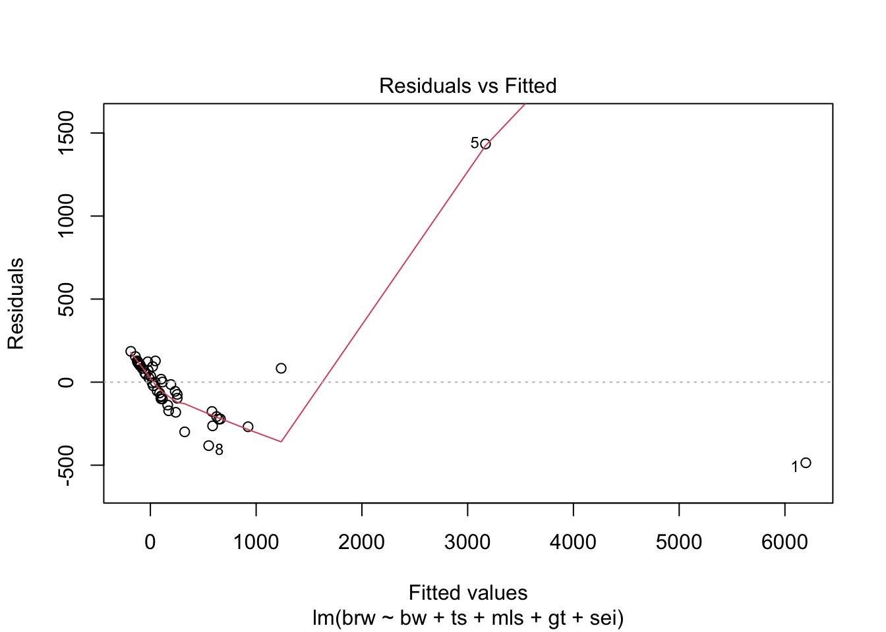
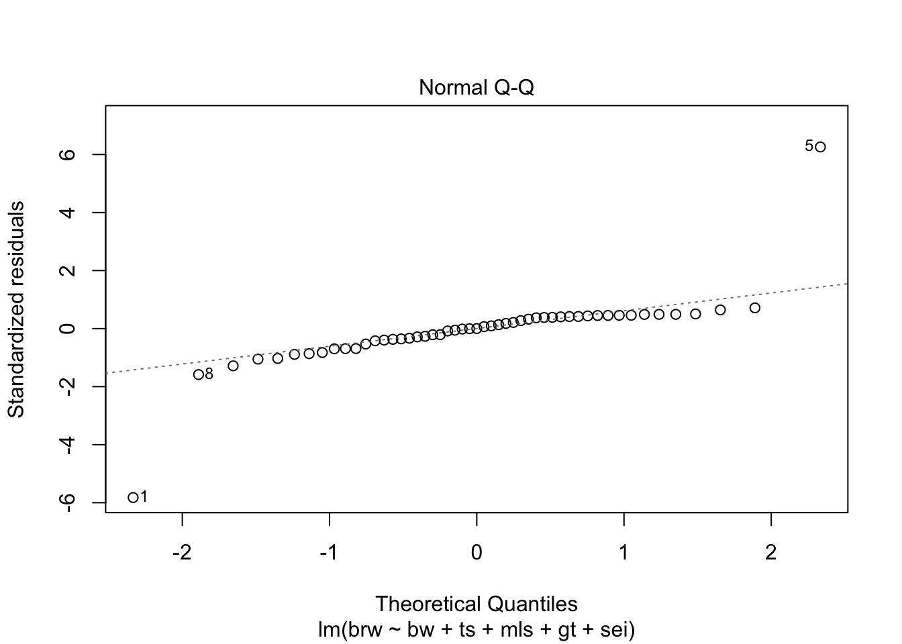
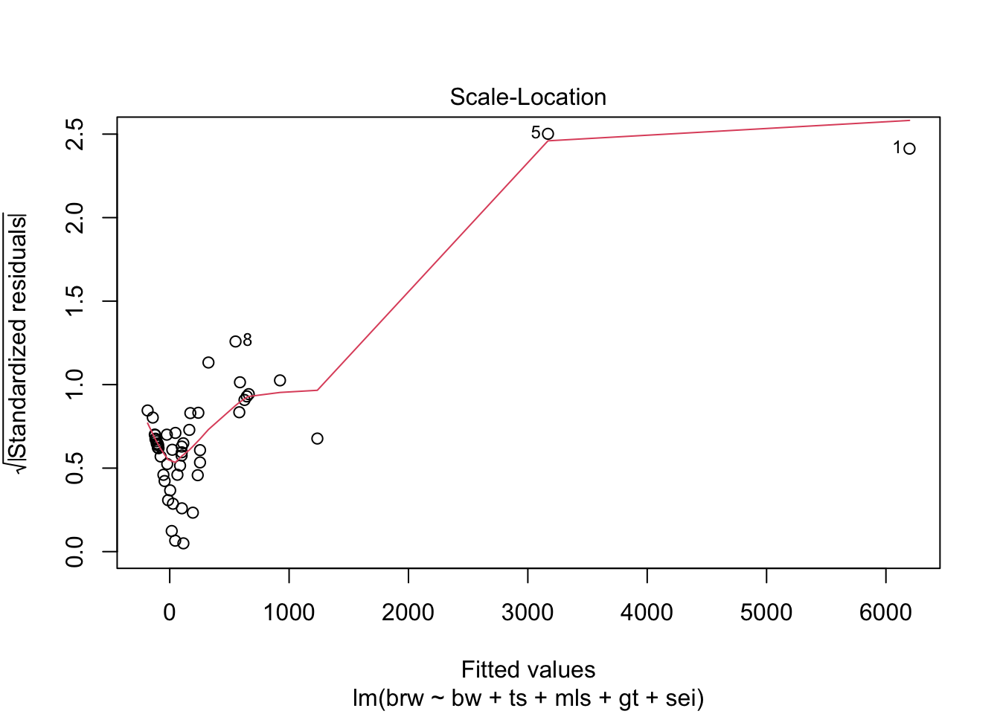
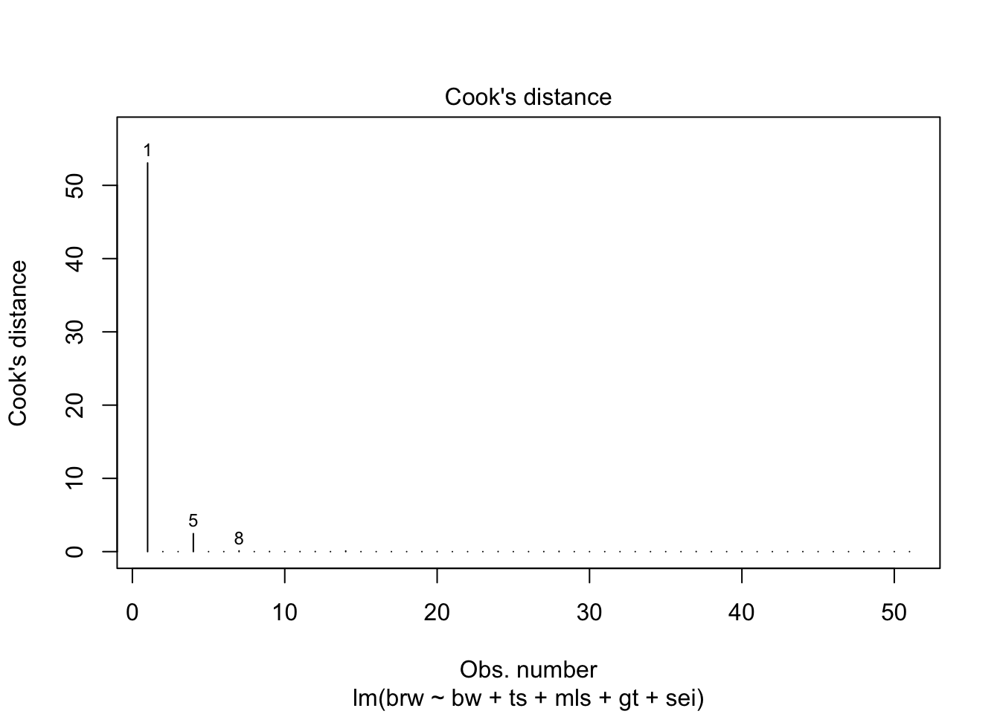
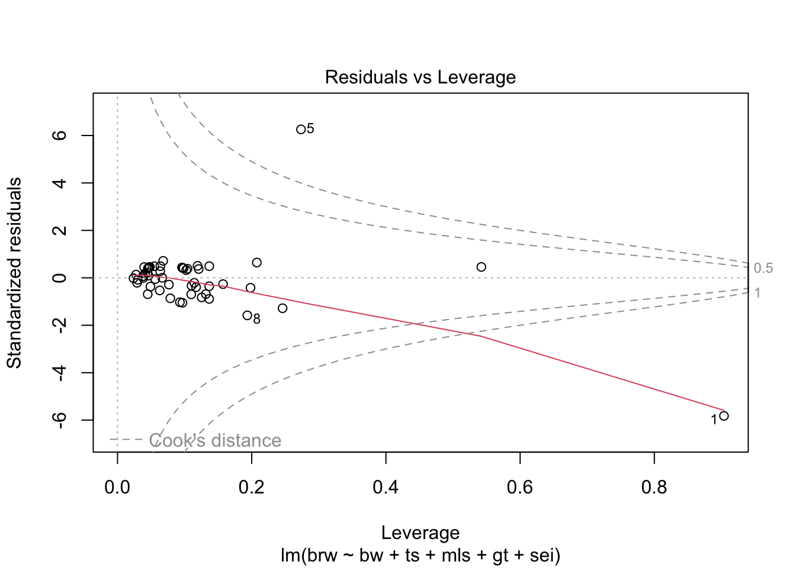
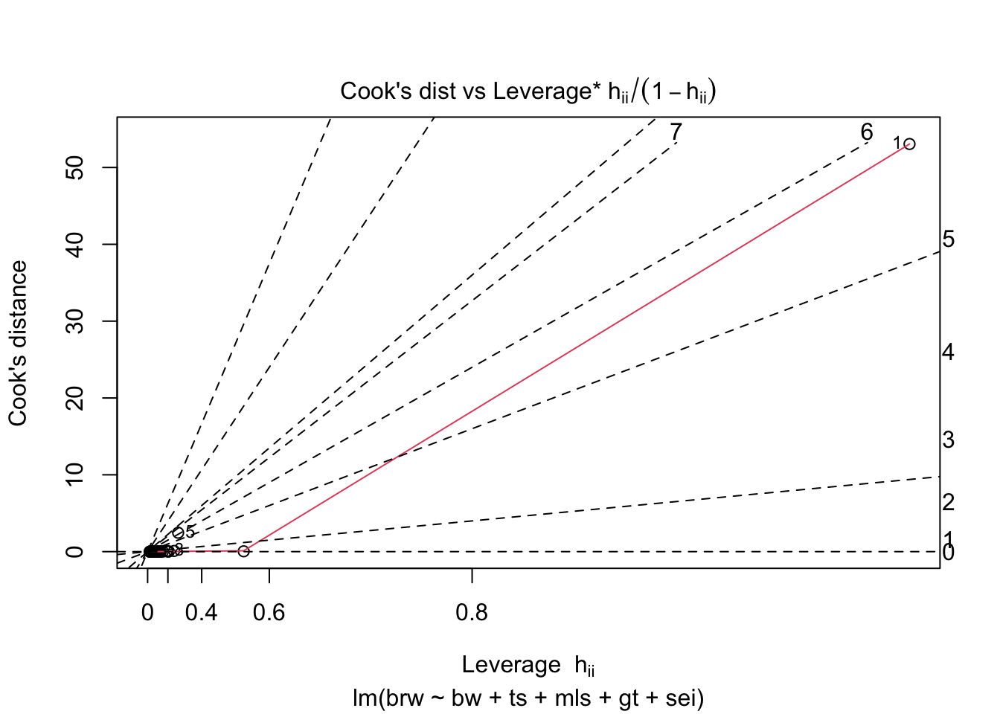
Some issues spring to mind:
- There error variance seems to be heteroscedastic [but we have a rather small sample]
- The residuals are not normally distributed in the extreme tails
- The following case has a large leverage: 1
- The following case has large residual: 5
mammalsleep$species[c(1, 5)][1] African elephant Asian elephant
62 Levels: African elephant African giant pouched rat ... Yellow-bellied marmotIf we sort the brw variable together with its strongest predictor
mammalsleep %>%
select(species, brw, bw, ts, mls, gt, sei) %>%
arrange(desc(brw)) #sort the data in descending order based on brw species brw bw ts mls gt sei
1 African elephant 5712.00 6654.000 3.3 38.6 645.0 5
2 Asian elephant 4603.00 2547.000 3.9 69.0 624.0 5
3 Man 1320.00 62.000 8.0 100.0 267.0 1
4 Giraffe 680.00 529.000 NA 28.0 400.0 5
5 Horse 655.00 521.000 2.9 46.0 336.0 5
6 Okapi 490.00 250.000 NA 23.6 440.0 5
7 Chimpanzee 440.00 52.160 9.7 50.0 230.0 1
8 Cow 423.00 465.000 3.9 30.0 281.0 5
9 Donkey 419.00 187.100 3.1 40.0 365.0 5
10 Gorilla 406.00 207.000 12.0 39.3 252.0 4
11 Gray seal 325.00 85.000 6.2 41.0 310.0 3
12 Pig 180.00 192.000 8.4 27.0 115.0 4
13 Baboon 179.50 10.550 9.8 27.0 180.0 4
14 Rhesus monkey 179.00 6.800 9.6 29.0 164.0 3
15 Sheep 175.00 55.500 3.8 20.0 151.0 5
16 Brazilian tapir 169.00 160.000 6.2 30.4 392.0 5
17 Jaguar 157.00 100.000 10.8 22.4 100.0 1
18 Gray wolf 119.50 36.330 13.0 16.2 63.0 1
19 Goat 115.00 27.660 3.8 20.0 148.0 5
20 Patas monkey 115.00 10.000 10.9 20.2 170.0 4
21 Roe deer 98.20 14.830 2.6 17.0 150.0 5
22 Giant armadillo 81.00 60.000 18.1 7.0 NA 1
23 Vervet 58.00 4.190 10.3 24.0 210.0 3
24 Kangaroo 56.00 35.000 NA 16.3 33.0 5
25 Red fox 50.40 4.235 9.8 9.8 52.0 1
26 Arctic Fox 44.50 3.385 12.5 14.0 60.0 1
27 Raccoon 39.20 4.288 12.5 13.7 63.0 2
28 Cat 25.60 3.300 14.5 28.0 63.0 2
29 Echidna 25.00 3.000 8.6 50.0 28.0 2
30 Rock hyrax (Procavia hab) 21.00 3.600 5.4 6.0 225.0 2
31 Genet 17.50 1.410 6.1 34.0 NA 2
32 Yellow-bellied marmot 17.00 4.050 NA 13.0 38.0 1
33 Owl monkey 15.50 0.480 17.0 12.0 140.0 2
34 Slow loris 12.50 1.400 11.0 12.7 90.0 2
35 Rock hyrax (Hetero. b) 12.30 0.750 6.6 7.0 225.0 2
36 Tree hyrax 12.30 2.000 5.4 7.5 200.0 1
37 Rabbit 12.10 2.500 8.4 18.0 31.0 5
38 Phanlanger 11.40 1.620 13.7 13.0 17.0 1
39 Nine-banded armadillo 10.80 3.500 17.4 6.5 120.0 1
40 Mountain beaver 8.10 1.350 11.2 NA 45.0 1
41 African giant pouched rat 6.60 1.000 8.3 4.5 42.0 1
42 Chinchilla 6.40 0.425 12.5 7.0 112.0 4
43 N. American opossum 6.30 1.700 19.4 5.0 12.0 1
44 Arctic ground squirrel 5.70 0.920 16.5 NA 25.0 2
45 Guinea pig 5.50 1.040 8.2 7.6 68.0 3
46 Galago 5.00 0.200 10.7 10.4 120.0 2
47 Ground squirrel 4.00 0.101 13.8 9.0 28.0 1
48 Water opossum 3.90 3.500 19.4 3.0 14.0 1
49 European hedgehog 3.50 0.785 10.7 6.0 42.0 2
50 Mole rat 3.00 0.122 10.6 NA 30.0 1
51 Tenrec 2.60 0.900 13.3 4.5 60.0 1
52 Tree shrew 2.50 0.104 15.8 2.3 46.0 2
53 Desert hedgehog 2.40 0.550 10.3 NA NA 1
54 Rat 1.90 0.280 13.2 4.7 21.0 1
55 Eastern American mole 1.20 0.075 8.4 3.5 42.0 1
56 Golden hamster 1.00 0.120 14.4 3.9 16.0 1
57 Star nosed mole 1.00 0.060 10.3 3.5 NA 1
58 Mouse 0.40 0.023 13.2 3.2 19.0 1
59 Musk shrew 0.33 0.048 12.8 2.0 30.0 1
60 Big brown bat 0.30 0.023 19.7 19.0 35.0 1
61 Little brown bat 0.25 0.010 19.9 24.0 50.0 1
62 Lesser short-tailed shrew 0.14 0.005 9.1 2.6 21.5 2we see that Man has a large brw for small bw and that African elephant is so large that it massively influences the model. For Man we would expect a much lighter brain given its body weight. We can also see this from the residuals:
fit %>%
residuals() 1 2 3 5 6 7
-485.5560450 106.2290991 -1.1334890 1434.2683263 -14.2173431 -99.9739636
8 9 10 11 12 14
-382.2870299 -138.2708329 -222.1389154 103.2062362 -222.9813136 -207.3502817
15 16 17 18 22 23
111.6721285 -299.3810807 119.0327425 -21.7754459 93.7473544 109.8701136
24 25 26 27 28 29
-176.6595017 -263.2907467 17.7387559 47.0471717 127.4386770 -268.6348480
30 32 33 34 37 38
-96.8256901 185.4170567 -172.4144182 83.3979884 118.9373998 119.9390604
39 40 42 43 44 45
82.6791039 -53.5732527 -83.9801061 0.6414618 24.9406553 -73.6937449
46 47 48 49 50 51
154.1785525 35.6757062 101.8866990 71.6287560 -55.4961698 -88.3634693
52 53 54 55 57 58
-65.5082879 122.5071227 127.4900821 -4.0547720 55.6039203 -101.3157666
59 60 61
127.8168865 -181.6354614 97.5209191 from the influence statistics:
fit %>%
influence()$hat
1 2 3 5 6 7 8
0.90376652 0.09680085 0.03820138 0.27344636 0.05622069 0.11707227 0.19346612
9 10 11 12 14 15 16
0.06299083 0.13658848 0.09859497 0.07869705 0.12546971 0.09609692 0.24598832
17 18 22 23 24 25 26
0.03973070 0.03019447 0.12099853 0.04617505 0.10988139 0.09296178 0.03795117
27 28 29 30 32 33 34
0.04105129 0.05488669 0.09677947 0.04907583 0.06803407 0.13168851 0.54221947
37 38 39 40 42 43 44
0.04692941 0.04828122 0.10241613 0.11430997 0.11037221 0.06662589 0.04627464
45 46 47 48 49 50 51
0.07663133 0.20760998 0.02767828 0.04517846 0.06359325 0.02915966 0.13663756
52 53 54 55 57 58 59
0.15726711 0.13674991 0.11930401 0.02387457 0.04466402 0.19821965 0.06384060
60 61
0.04501389 0.10433937
$coefficients
(Intercept) bw ts mls gt
1 -243.72029374 -7.891619e-01 8.300378873 1.961265e+00 1.213301e+00
2 25.21936417 1.413647e-03 -1.206573436 -7.335218e-02 -1.813002e-02
3 -0.08631166 -6.519435e-06 0.001850449 -8.986121e-05 6.447977e-05
5 -222.37630813 -3.864155e-03 9.482902916 1.328092e+00 1.088658e+00
6 1.23516961 1.979373e-04 -0.063616829 -4.345374e-03 -1.847447e-04
7 15.38832782 -5.432214e-04 -1.324156374 -9.241778e-02 8.203378e-04
8 60.48183044 2.901918e-02 -2.848182251 8.097885e-01 -3.426136e-01
9 8.08219132 -1.659263e-03 -0.708783091 -2.266736e-01 3.415038e-02
10 -14.83398360 5.099153e-03 0.549892324 -4.320579e-01 -5.267207e-02
11 -13.71999924 -9.170728e-04 0.867035841 -1.055549e-01 2.565440e-03
12 -1.05736367 2.688443e-03 0.579881544 5.396998e-02 -1.076290e-02
14 6.18986203 9.959258e-03 0.240514300 9.009225e-02 -8.913409e-02
15 26.18872034 1.394162e-03 -1.242033539 -8.959104e-02 -1.713371e-02
16 -50.31756815 -1.692566e-02 3.179504037 -1.672341e+00 3.352325e-01
17 10.32949936 1.392736e-03 -0.383105546 -4.747950e-02 -2.249698e-02
18 -0.98684647 2.228338e-04 0.015753756 1.986039e-02 -2.935611e-03
22 6.58455160 4.821783e-04 -0.638174756 1.542362e-02 -3.505366e-02
23 4.89650785 1.187494e-03 0.099911014 -4.859549e-02 -9.064587e-03
24 36.40960548 4.536888e-03 -2.056885018 -1.466931e-01 -4.167628e-02
25 -5.00633467 1.105221e-02 0.433175399 -2.350633e-02 -1.165109e-01
26 1.04073805 1.201451e-04 -0.010461765 5.052978e-03 -1.136219e-03
27 2.54661940 5.084744e-04 0.001183841 -2.497786e-03 -5.040769e-03
28 11.88649415 1.357163e-03 -0.633372764 -5.456064e-02 -3.247090e-02
29 -0.24983987 4.472249e-03 0.850871137 -2.243379e-01 -1.807907e-02
30 -10.57779705 -4.922710e-04 0.393768168 -5.105855e-02 5.179576e-03
32 28.53048895 3.570485e-03 -1.358210784 -9.209852e-02 -5.688596e-02
33 30.19122380 -5.338780e-04 -2.483945499 -2.252012e-01 -1.753357e-03
34 11.21681229 -1.485900e-04 -0.865126400 1.140465e+00 -5.130672e-02
37 9.71039304 1.351139e-03 -0.172191353 -6.465768e-02 -1.166554e-02
38 10.77073455 9.402313e-04 -0.228081945 -9.675266e-02 -5.032490e-03
39 -9.89672227 4.285150e-04 0.967966630 -2.807885e-02 4.079672e-03
40 5.96424958 1.452604e-03 -0.601268163 8.715142e-02 -2.837401e-02
42 14.81578562 2.318740e-03 -1.154080165 9.618280e-02 -3.784149e-02
43 -0.07314966 -1.065209e-05 0.004206938 -1.934365e-04 5.630308e-05
44 1.50944208 4.203137e-04 -0.014371516 1.266259e-02 -5.390016e-03
45 0.25180713 -1.320030e-03 0.064563528 -9.447721e-02 3.115094e-02
46 -4.27223545 5.971332e-03 -0.111275900 2.538248e-01 -1.365289e-01
47 0.53009765 2.395557e-04 0.037122001 4.450059e-03 -4.448297e-03
48 8.10621682 1.179136e-03 -0.141994812 -4.181767e-02 -1.091671e-02
49 12.33365624 7.470523e-04 -0.540374093 -1.717373e-02 -9.612321e-03
50 0.69553868 5.210781e-04 -0.047772953 -3.262922e-02 4.553270e-04
51 -12.34827888 3.811564e-03 0.555351409 2.515678e-01 -5.483223e-02
52 -12.25405271 2.786901e-03 0.603867004 1.979415e-01 -3.961636e-02
53 13.97782003 5.011877e-04 -1.167005941 -2.509449e-02 -4.491956e-02
54 8.86474762 7.004253e-04 -0.858771111 1.788077e-02 -4.676115e-02
55 -0.19784084 1.055703e-07 0.004440846 1.220367e-03 1.184715e-04
57 3.18619488 -5.497384e-05 0.004555809 -5.141468e-02 4.983695e-03
58 -28.56155358 3.739395e-03 1.395498566 2.787572e-01 -5.798662e-02
59 -9.63366731 4.197479e-05 0.961028516 -1.154272e-01 5.556994e-03
60 9.89309757 5.111625e-03 -0.700129056 9.372341e-02 -5.521970e-02
61 -11.66188823 3.311138e-04 1.152496607 -5.752401e-02 8.412294e-03
sei
1 9.81613002
2 -2.72951278
3 0.01557169
5 -7.18465245
6 -0.32753933
7 -0.83130974
8 -5.89595125
9 -1.44964422
10 7.80997880
11 3.65565323
12 -4.01918629
14 -1.92346523
15 -2.85032581
16 -0.20737504
17 -0.03834421
18 0.14299652
22 2.72227838
23 -0.68195638
24 -4.55163332
25 3.82628293
26 -0.21961298
27 -0.38536066
28 1.10977706
29 -3.38753239
30 2.00304757
32 -0.58636471
33 -1.41665399
34 -5.85319446
37 -1.15244417
38 -1.42227624
39 0.64273176
40 0.41679480
42 -0.73648205
43 0.01688128
44 -0.17609909
45 -1.92202225
46 9.05021867
47 0.11983892
48 -0.98553762
49 -1.50855921
50 -0.34524738
51 2.63589409
52 2.24214991
53 3.12404097
54 3.66670950
55 0.01182831
57 -0.71478964
58 5.47730002
59 1.58781903
60 -0.63930534
61 0.71772803
$sigma
1 2 3 5 6 7 8 9
135.04872 271.35637 271.87903 97.82349 271.87013 271.40553 264.19703 271.02492
10 11 12 14 15 16 17 18
269.47973 271.38474 269.61397 269.81643 271.30182 266.86449 271.26167 271.85865
22 23 24 25 26 27 28 29
271.46086 271.34960 270.40967 268.66571 271.86541 271.78259 271.15991 268.51889
30 32 33 34 37 38 39 40
271.46669 270.33284 270.44438 271.24331 271.25800 271.24658 271.56058 271.74361
42 43 44 45 46 47 48 49
271.54753 271.87906 271.85182 271.63315 270.62231 271.82437 271.42429 271.64998
50 51 52 53 54 55 57 58
271.74646 271.50082 271.66616 271.15145 271.10660 271.87838 271.74378 271.34345
59 60 61
271.14870 270.43130 271.43491
$wt.res
1 2 3 5 6 7
-485.5560450 106.2290991 -1.1334890 1434.2683263 -14.2173431 -99.9739636
8 9 10 11 12 14
-382.2870299 -138.2708329 -222.1389154 103.2062362 -222.9813136 -207.3502817
15 16 17 18 22 23
111.6721285 -299.3810807 119.0327425 -21.7754459 93.7473544 109.8701136
24 25 26 27 28 29
-176.6595017 -263.2907467 17.7387559 47.0471717 127.4386770 -268.6348480
30 32 33 34 37 38
-96.8256901 185.4170567 -172.4144182 83.3979884 118.9373998 119.9390604
39 40 42 43 44 45
82.6791039 -53.5732527 -83.9801061 0.6414618 24.9406553 -73.6937449
46 47 48 49 50 51
154.1785525 35.6757062 101.8866990 71.6287560 -55.4961698 -88.3634693
52 53 54 55 57 58
-65.5082879 122.5071227 127.4900821 -4.0547720 55.6039203 -101.3157666
59 60 61
127.8168865 -181.6354614 97.5209191 From the influence we see:
- the residual standard deviation
$sigmawould drop when the first case and the fifth case would be omitted. - the dimension
$coefficientswould dramatically change if cases 1 and 5 were omitted
The influence(fit)$coefficients is equivalent to the dfbeta() return:
fit %>%
influence %>%
.$coefficients %>%
head() (Intercept) bw ts mls gt
1 -243.72029374 -7.891619e-01 8.300378873 1.961265e+00 1.213301e+00
2 25.21936417 1.413647e-03 -1.206573436 -7.335218e-02 -1.813002e-02
3 -0.08631166 -6.519435e-06 0.001850449 -8.986121e-05 6.447977e-05
5 -222.37630813 -3.864155e-03 9.482902916 1.328092e+00 1.088658e+00
6 1.23516961 1.979373e-04 -0.063616829 -4.345374e-03 -1.847447e-04
7 15.38832782 -5.432214e-04 -1.324156374 -9.241778e-02 8.203378e-04
sei
1 9.81613002
2 -2.72951278
3 0.01557169
5 -7.18465245
6 -0.32753933
7 -0.83130974fit %>%
dfbeta() %>%
head() (Intercept) bw ts mls gt
1 -243.72029374 -7.891619e-01 8.300378873 1.961265e+00 1.213301e+00
2 25.21936417 1.413647e-03 -1.206573436 -7.335218e-02 -1.813002e-02
3 -0.08631166 -6.519435e-06 0.001850449 -8.986121e-05 6.447977e-05
5 -222.37630813 -3.864155e-03 9.482902916 1.328092e+00 1.088658e+00
6 1.23516961 1.979373e-04 -0.063616829 -4.345374e-03 -1.847447e-04
7 15.38832782 -5.432214e-04 -1.324156374 -9.241778e-02 8.203378e-04
sei
1 9.81613002
2 -2.72951278
3 0.01557169
5 -7.18465245
6 -0.32753933
7 -0.83130974End of Practical.